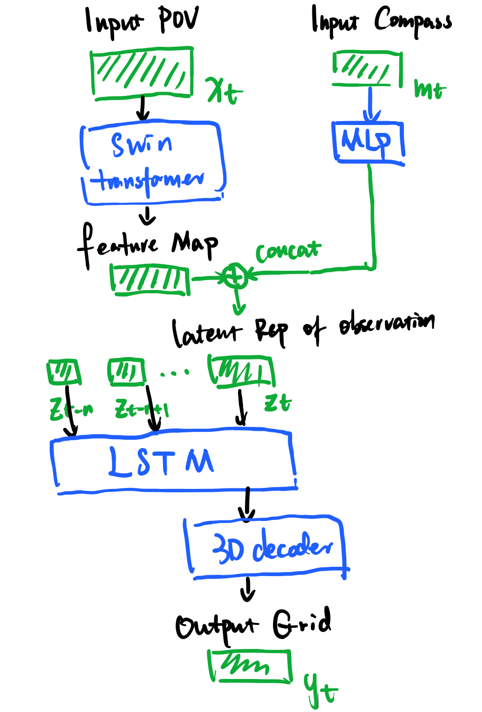
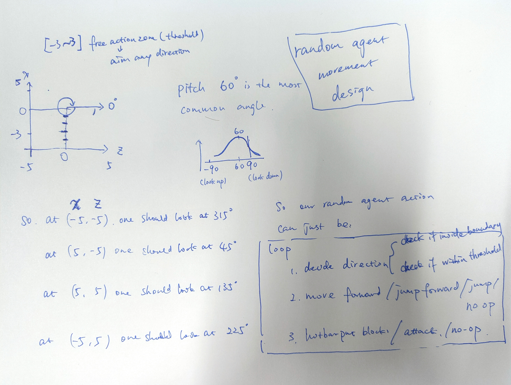
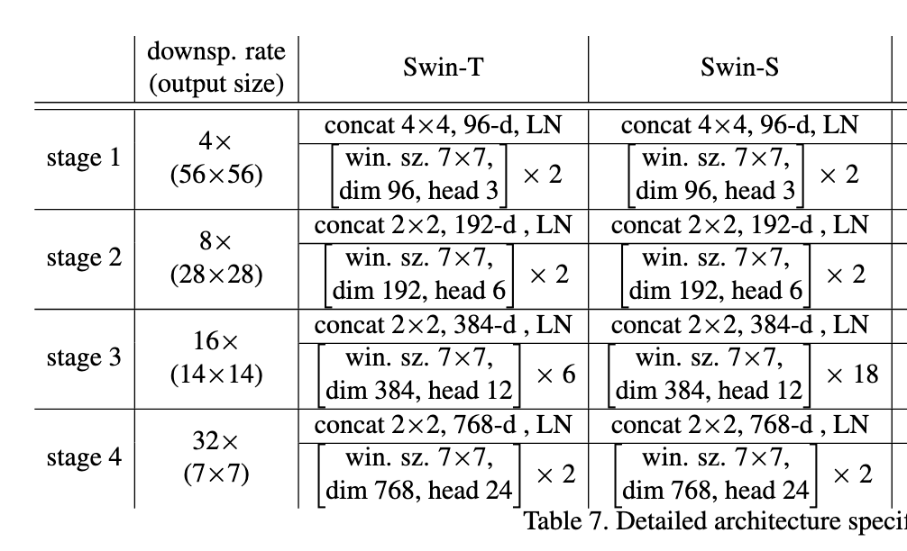
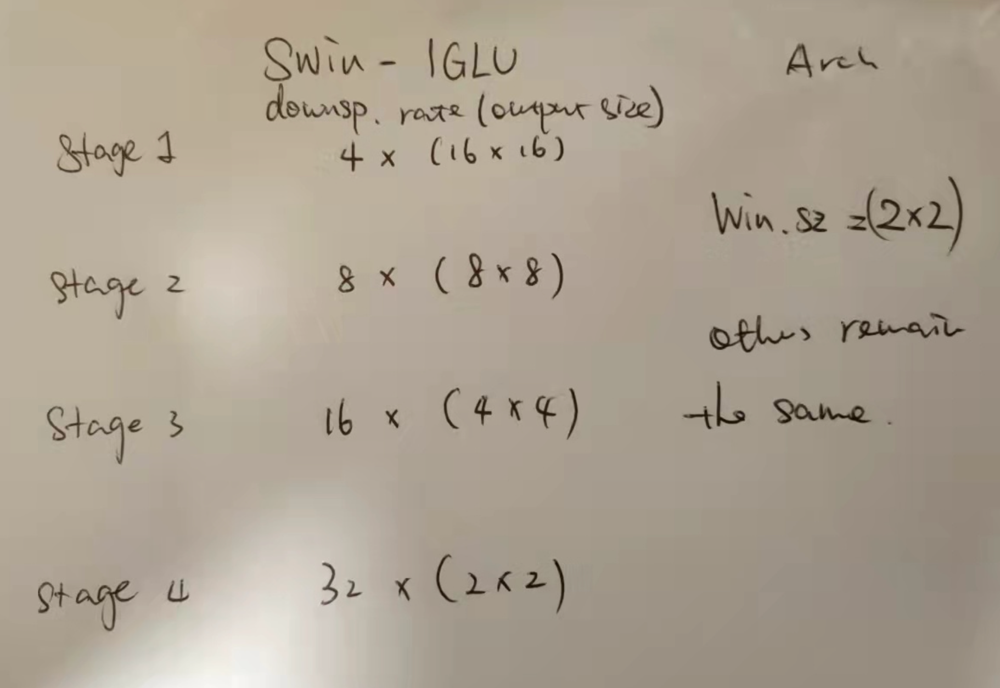

Last Week’s Work Review#
Last week I checked the environment codes for IGLU competition. So, this week we should start to build our Modular RL model.

You need password to access to the content, go to Slack *#phdsukai to find more.
Part of this article is encrypted with password:
[TOC]
TODO List#
We split the model building into three phases, this week let’s try to finish at least one of them.
-
Phase 1: Supervised model converting visual image to discrete grid
- auto-generate training dataset
- build the visual model
-
Phase 2: Supervised model that activate desired Modular Policy network by the chat info.
-
Phase 3: Modular Policy Network.
Phase 1: Self-supervised model converting visual image to discrete grid#
We want to use the SOTA Computer Vision model
The following are candidates SOTA CV model
- Swin Transformer V1 V2
- Masked Autoencoder MAE by Kaiming He
- Swin Transformer with Deformable Attention
Some Notes for MAE
- since grids are concise and compressed high level info, thus a simple MLP is able to do the job, instead of building a complex decoder
- regularisation and normalisation help to increase the accuracy for small dataset
- fine tuning reasonable number of pre-trained layers helps to increase the performance (but not all layers)
Some Notes for Swin-transformer
- Shifted window is the key difference between Swin-transformer and ViT.
Some Notes for Grid reconstruction
- The previous IGLU winner model reconstructed the 3D grid using it’s Chat2Target Decoder.
- they used simple ConvTranspose3d module.
- for SOTA 3D object reconstruction model Pix2Vox++, they also use ConvTransposed3d, and BatchNorm3d and ReLU
proposed module architecture#

we can replace LSTM with SRU for efficiency
but before that, we need to generate training dataset first
- our training dataset can be generated automatically by just random sampling the action in the environment
- but we still need to limited the total number of steps.
Known issue…
we have to reset the environment twice at the starting stage otherwise the agent will drop all its items and also the item texture will be missing.
Random Agent for generating training dataset#

we need a random agent to perform random action to build random blocks. The trajectory will be recorded and train the visual module.
- maybe we can also use this dataset to train Policy network?
Yes, I complete this on Tuesday hehe!
- but I realise that it can takes 2-3 days to generate training dataset…. oh no…

Swin transformer#
the original Swin-S architecture looks like the following

we need to modify the architecture to fit the IGLU dataset

Paper Reading Notes#
-
M6: A Chinese Multimodal Pretrainer
- Author: Junyang Lin et. al.
- Publish Year: May 2021
- Review Date: Jan 2022
-
GLIDE: Towards Photorealistic Image Generation and Editing with Text-Guided Diffusion Models
- Author: Alex Nichol et. al.
- Publish Year: Dec 2021
- Review Date: Jan 2022
-
When Attention Meets Fast Recurrence: Training Language Models with Reduce Compute
- Author: Tao Lei
- Publish Year: Sep 2021
- Review Date: Jan 2022